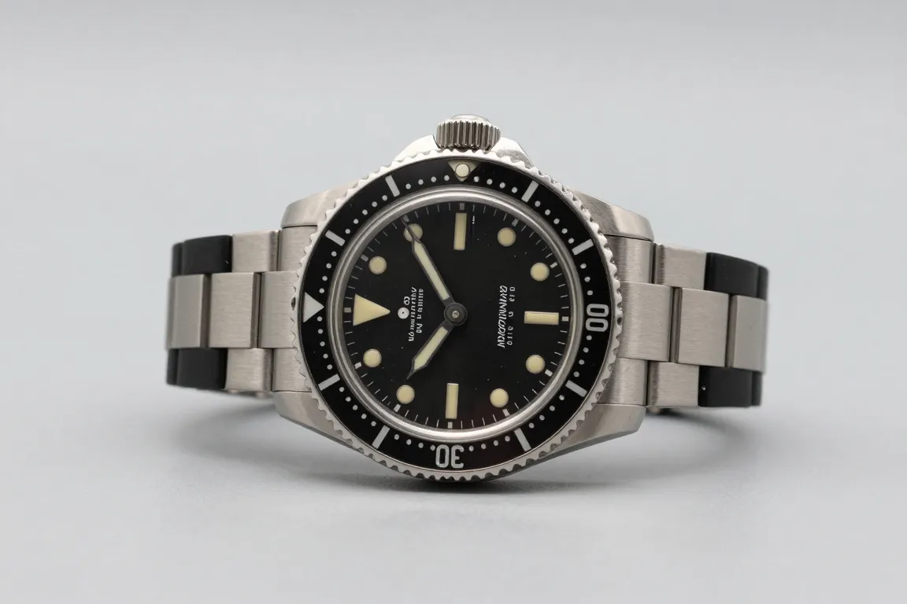

The watch for the diver. It has a steel case sealed for 100 m, a black dial with large luminous markers and a rotating bezel that counts minutes. The strap fits over a wetsuit. Two Swiss models of 1953 set the type.

Core thesis
A diver's life depends on a clear dial and a sealed case. The watch trades slimness for a dial that is easy to read in the dark and under pressure.
Design principles
Fit a screw-down crown, a screw-down back and a gasket that seal the case to 100 m or more.
Mark the rotating bezel in minutes from 0 to 60. Let it turn only against the clock, so that a knock shortens the time shown.
Paint the markers and hands with luminous paint in big, plain shapes on a matt black dial.
Make the case 38 to 42 mm wide and 12 to 15 mm thick, with a bezel that a gloved hand can turn.
Fit a domed acrylic crystal, so that the crystal does not crack under pressure.
Mark the 12 with a triangle or a double marker, so that the diver finds the top at once.
Print the depth rating on the dial.
Fit a strap that goes over a wetsuit sleeve, as a bracelet with an extension or a rubber strap of 200 to 250 mm.